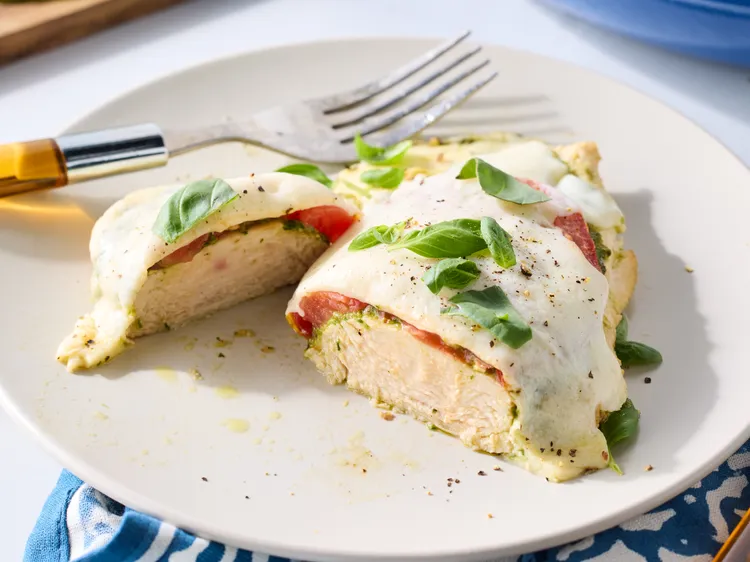

<!DOCTYPE html>
<html lang="en"></html>

    <head>

        <meta charset="UTF-8">

        <title>Pesto Chicken Caprese</title>

    </head>

    <body>
        <h1>Pesto Chicken Caprese</h1>
        

        <h2>Description:</h2>

            <p>This pesto chicken caprese comes out wonderfully moist and flavorful. Tomato slices add<br>
                a nice acidity to the chicken breasts and melted mozzarella on top is the perfect finish.</p>
        
        <h3>Ingredients:</h3>

            <ul>
                <li>2 (10- to 12-ounce) skinless boneless chicken breasts</li>
                <li>1/2 teaspoon salt</li>
                <li>2 tablespoons olive oil</li>
                <li>4 tablespoons basil pesto</li>
                <li>1 large beefsteak tomato, cut into four 1/4-<br>
                inch thick slices </li>
                <li>8 ounces fresh mozzarella cheese, cut into 8<br>
                slices</li>
                <li>fresh basil leaves, torn</li>
            </ul>

        <h3>Directions:</h3>

            <ol>
                <li>Gather all ingredients. Preheat the oven to 400 degrees F (200 degrees C).</li>
                <br>

                <li>Cut chicken breasts in half horizontally and, if needed, pound each to even<br>
                thickness with a meat mallet. Season both sides with salt.</li>
                <br>

                <li>Heat oil in a 12-inch oven-proof skillet over medium heat. Add chicken to skillet<br>
                and cook until lightly browned, 3 to 4 minutes. Flip and cook the other side until<br>
                lightly browned, 3 to 4 minutes. Remove skillet from heat.</li>
                <br>

                <li>Spread 1 tablespoon of pesto on top of each chicken portion.</li>
                <br>

                <li>Place 1 tomato slice on top of each chicken portion and top with 2 slices of<br>
                mozzarella.</li>
                <br>

                <li>Transfer skillet to the preheated oven and bake until cheese is melted and<br>
                chicken is cooked through (165 degrees F or 74 degrees C), about 10 minutes.</li>
                <br>

                <li>Serve topped with torn basil leaves.</li>
                <br>
            </ol>


        <a href="../index.html">Home</a>
    </body>